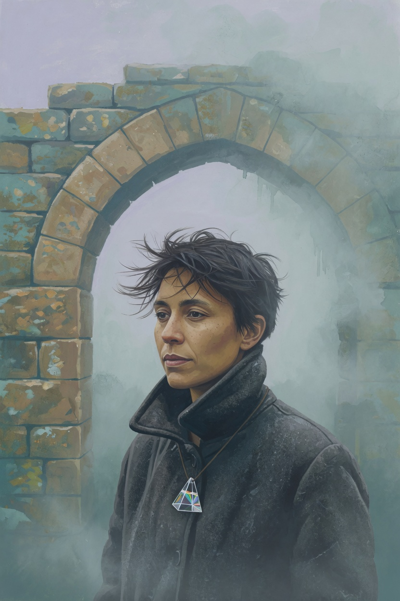
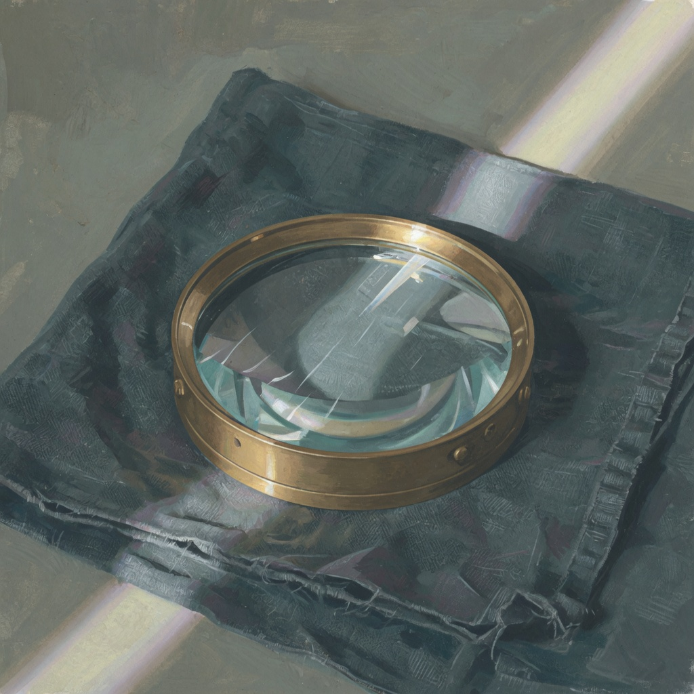
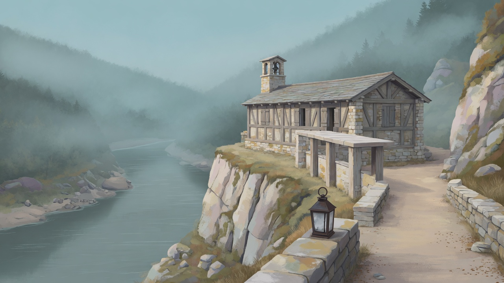

阿衡 出场
14力道 MGT
12灵巧 FIN
13体魄 VIG
11洞察 INS
10心智 MND
15气场 PRE
参考稿 · 会话列表 · 不是运行时画面
AI 担任导引者，纯文本推进。下面是可以继续的存档。
参考稿 · 主画面 · 输入条是目标结构，发送属 U2
桥索上全是冷水。对岸只剩一层浅色的边。
参考稿 · L2 队伍层 · 数据绑定属 U4 · 肖像样张未接入运行时
桥索上全是冷水。

参考稿 · 控件状态与测试样张 · 样张不进入运行时
无法连接服务，请确认后端仍在运行。

